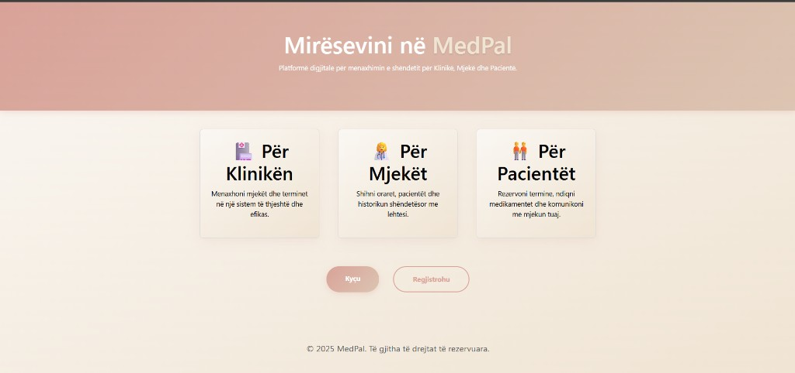

MedPal — Digital Health Platform
A healthcare operations platform engineered with role-based access control (Admin, Doctor, Patient), relational document modeling in MongoDB, medical document uploads, and automated reminder workers.

Overview
MedPal is an end-to-end full-stack web application designed to unify clinic operations. Healthcare facilities frequently struggle with disjointed tools for patient intake, appointment scheduling, and electronic records. MedPal centralizes these operational flows under a secure, role-based architecture.
The Engineering Problem
Managing healthcare data requires strict access segregation between clinical staff and patients, robust relational integrity (ensuring doctor availability matches booked slots without double-booking), and automated notification workflows to minimize missed consultations.
Architecture & Technical Implementation
The application is structured into a modular Express.js backend and a component-driven React client:
- Authentication & RBAC: JWT authentication with custom middleware enforcing granular access controls across Admin, Doctor, and Patient roles.
- Data Modeling: Mongoose schemas with ObjectId references across Users, Appointments, Departments, Services, Documents, Visit Reports, and Working Hours.
- Appointment Engine: Dynamic validation of clinic working hours and physician availability to prevent scheduling conflicts.
- Document Management: Secure upload, retrieval, and deletion workflows for patient diagnostic reports and medical files.
- Background Automation: Scheduled background cron worker (reminderJob.js) scanning upcoming appointments and triggering notification alerts.
My Role & Contributions
Full Stack Developer: architectural design, Express REST API development, JWT & role middleware, MongoDB schema modeling, and building the React single-page client interface.
Key Challenges & Trade-offs
- Relational Integrity in MongoDB: Implementing document references and populate patterns to maintain data consistency across appointment cancellations and doctor schedule changes without relational foreign keys.
- Role-Aware Component Architecture: Structuring frontend routes and shared component states so sensitive clinical actions remain strictly shielded from unauthorized roles.
Results
Delivered a complete, demoable healthcare management platform with authenticated role separation, appointment lifecycle management, and background cron automation.